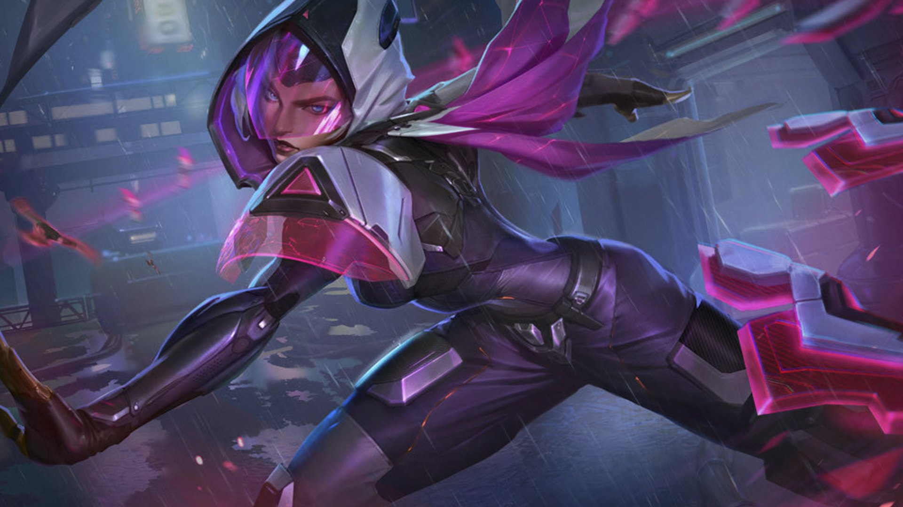
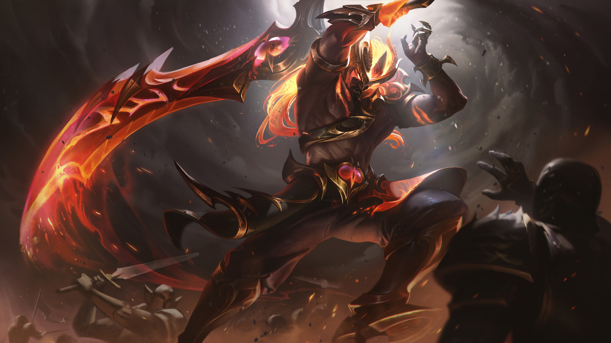

Estamos chegando naquela hora de uma nova atualização dentro do League of Legends. Depois de publicar alguns teasers que 29 campeões sofreriam buffs e nerfs, agora foi a vez da equipe de desenvolvimento mandar ver com todas as alterações do Patch 12.11 do LoL.
A lista de hoje é extensa, então já se prepare pra imensidão de novidades logo abaixo. Também temos mudanças em vários itens e outros ajustes dentro do jogo, como no dano das torres e nas Feridas Dolorosas.
LoL: As mudanças até agora no patch 12.11
Campeões buffados
Aphelios
- Velocidade de ataque da passiva: 6-36% > 7,5-45%
- Letalidade da passiva: 4,5-27 > 5,5-33
Caitlyn
- Dano do Q pelo AD: 130-10% do AD > 125%-205% do AD
- Mana do Q: 50-90 > 55-75
- Dano base do E: 70-230 > 80-280
- Recarga do E: 16-10 > 16-8

Irelia
- Cura do Q: 7-11% do AD > -13% do AD
- Recarga do E: 18-12 > 16-12
Gragas
- Escala de AP no Q: 70% > 80%
- Recarga do Q: 11-7 > 10-6
- Recarga do E: 16-12 > 14-12
Lee Sin
- AD base: 66 > 68
- Dano do Q: 50-150 (+100% do AD bônus) > 55-155 (+100% do AD bônus)
Nunu
- Cura do Q em unidades: 65-185 (70% do AP) (6%bHP) > 65-185 (90% do AP) (+10%bHP)
- Cura do Q em campeões: 39-111 (+42% do AP) (+3,6% do AP) > 39-111 (+54% do AP) (6%bHP)
Rakan
- Cura do Q: 18-90 > 30-115
- Recarga do W: 18-12 > 16-10
- Mana do E: 60-100 > 40-60
- Escudo base do E: 35-135 > 50-150
Ryze
- Dano do E: 60-140 (+30% do AP) (2% da mana bônus) > 60-140 (+35% do AP) (2% do mana bônus)
- Mana do E: 40-100 > 35-75
Samira
- Crescimento do AD: 3 > 3,3
- Escala de AD no dano do Q: 80-120% de AD > 85-125% de AD
Sylas
- Mana do W: 60-100 > 50-90
- Escala de AP na cura do W: 35% > 40%
- Recarga do W: 13-6 > 12-6
- Recarga do E: 14-10 > 13-9
Tahm Kench
- Dano da passiva no ataque: 8-60 (+2,5% bHP) > 8-60 (+4% bHP)
- Cura do Q: 1-20 > 10-30
- Escudo do R: 500-900 > 650-950
Taric
- Cura do Q por contador: 25(+15% do AP) (+0,75% do HP máximo) > 25 (+15% do AP) (+1% do HP máximo)
- Mana do Q: 65-85 > 60
- Recarga do E: 17-13 > 15-11
- Duração do stun do E: 1,25 > 1,5

Tryndamere
- Cura base do Q: 25-57 > 30-70
- Bônus de cura no Q por Fúria: 0,45-1,65 > 0,5-2,3
- Recarga do R: 130-90 > 120-80
Campeões nerfados
Brand
- Dano de queimadura na passiva: 3% > 2% da vida máxima
- Dano de detonação da passiva: 10-14% da vida máxima > 9-13% da vida máxima
Gwen
- Bônus de AR/MR do W: 20 (+5% de AP) > 12-20 (+5% de AP)
- Recarga do W: 22-14 > 22-18
- Refund de recarga no E: 60% > 50%
Kog’Maw
- Destruição de AR/MR no Q: 25-33% > 23-31%
- Bônus de velocidade de ataque do Q: 15-35% > 10-30%
- Dano em % do W: 3-7% > 3-6%
Lillia
- HP base: 650 > 625
- Dano da passiva: 6% (+1,5% por 100 de AP) HP máximo > 6% (+1,2 por 100 de AP) HP máximo
Master Yi
- Crescimento de HP: 106 > 100
- Dano verdadeiro do E: 30-62 (+35% do AD bônus) > 30-50 (+35% do AD bônus)
Rengar
- HP base: 655 > 620
- Recarga do R: 110-70 > 110-90
Senna
- Drop de almas de minions mortos: 2,1666% > 8,33%
- Slow base do Q: 20% > 15%
- Duração do slow do Q: 2s > 1-2s
Kayn (Slayer)
- Dano do Q: 65% (+5% (aumentado por 5,5% por 100 de AD)% do HP máximo do alvo) > 65% (+5% (aumentado por 5% por 100 de AD)% do HP máximo do alvo)
Swain
- Cura da passiva: 3,5-7% > 3-6%
- Dano do W: 80-240 (+70% do AP) > 80-220 (+55% do AP)
- Cura do R por tick: 15-45 (+20% do AP) > 15-40 (+18% do AP)
Taliyah
- Dano do E em monstros: 100% > 150%
- R não pode mais ser usado em 3 segundos dando dano
Veigar
- Recarga do E: 20-12 > 20-14
Wukong
- Recarga do W: 20-12 > 22-12
- Dano do E em monstros: 180% > 160%
Ajustes de campeões
Fizz
- Crescimento de Mana: 37 > 52
- Crescimento de Vida: 112 > 106
Olaf
- Limite da passiva: 22,5% > 30%
- Dano base do Q: 60-260 > 70-270
- Recarga mínima do Q: 3s > 2,5s
- Recarga do W: 16-10 > 16-12
- Armadura e resistência mágica do R: 10-40 > 10-30
Sona
-
Dano bloqueado no W agora sincroniza com o valor base do escudo
Zeri
Q
- Dano ativo: 7-15 (+1,1-1,2 AD) >>> 8-20 (+1,1-1,3 AD)
- Dano de ataque da passiva carregada: 90-200 (0,8 AP) + 1-10% da vida máxima >>> 90-200 (0,9 AP) +3-15% da vida máxima
- Slow da passiva será REMOVIDO
W
- Recarga: 13-s >>> 12-8s
- Escala de AD: 1,4 >>> 1,5
- Slow: 30-70% >>> 30-50%
- Novo: Se o W acertar uma parede irá dar dano crítico em minions e campeões
E
- Recarga: 26-20 >>> 22-16
- Redução da recarga por acerto: 1 >>> 0,5
- Redução da recarga no crítico: 3 >>> 1,5
R
- Recarga: 120-70 >>> 100-70
- Velocidade de movimento por stack: 1,5% >>> 1%
- Stack por cada campeão acertado: 4 >>> 8
Buffs de sistema
- Coroa da Rainha Despedaçada – AP: 60 > 70
- Explocinturão Hextec – Penetração Mágica: 6 > 10
- Colhedor Noturno – Aceleração de habilidade: 15 > 25 | Recarga por campeão: 40s > 30s
- Crepúsculo de Draktharr – Letalidade: 18 > 22
- Eclipse – Letalidade: 18 > 22 | Proc de dano: 6% do HP máximo > 6% do HP máximo (melee) / 3% do HP máximo (ranged)
- Garra do Espreitador – Letalidade: 18 > 22
- Arco de Axioma – Letalidade: 10 > 13
- Presa da Serpente – Letalidade: 12 > 14
- Hemodrenário – Aceleração passiva de Mítico: 5 > 7 por item lendário
- Sinal de Sterak – Bônus de AD: 40% do AD base > 45% do AD base | Escudo: 70% do HP bônus > 75% do HP bônus
- Lâmina do Rei Destruído – Roubo de vida: 7% > 8%
- Brasa de Bami – Custo total: 1100 > 1000
- Manopla do Raio de Gelo – Vida: 350 > 450
- Quimitanque Turbo – Vida: 350 > 450
- Édige de Fogo Solar – Vida: 350 > 450
- Randuin – Armadura: 80 > 90
- Semblante Espiritual – Resistência Mágica: 40 > 50
- Máscara Abissal – Resistência Mágica: 30 > 45 | Resistência Mágica por inimigo: 7 > 9
- Convergência de Zeke – Armadura: 25 > 35
- Juramento do Cavaleiro – Aceleração de habilidade: 10 > 20
Nerfs de sistema
- Dano da torre – AD das torres fora da base: 167-391 > 162-344 durante o tempo de jogo
- Glacieterno – Duração do slow/stun: 1,5s > 1s
- Angústia de Liandry – Dano base da queima: 60 > 50
- Criafendas – Poder de Habilidade: 80 > 70
- Glaive Sombria – Recarga: 35s > 40s
- Mandíbula de Malmortius – Recarga: 60s > 75s
- Dança da Morte – Escala da Cura: 140% do AD bônus > 120% do AD bônus
- Tempo Letal (runa) – Velocidade de ataque bônus por stack: 5-9% > 3-7% para campeões ranged (melee se mantém)
- Mata-Cráquens – Bônus de Dano Verdadeiro: 60 (+45% de AD bônus) > 50 (+40% de AD bônus)
Ajustes de sistema
- Feridas Dolorosas: 30/50% > 25%/40% de cura reduzida (de itens e campeões)
- Armadura de Espinhos – Retorno de dano: 10 (+10% de armadura bônus) > 10 (+20% de armadura bônus)
- Colete Espinhoso – Retorno de dano: 3 > 4
- Lembrete Mortal – Ativação de Feridas Dolorosas: 3 ataques básicos > 2 ataques básicos
- Serrespada Quimiopunk – AD: 45 > 55 | Aceleração de habilidade: 15 > 25
- Chamado do Carrasco – AD: 15 > 20
- Morellonomicon – AP: 80 > 90 | Vida: 250 > 300
- Putrificador Quimtec – AP: 55 > 60
- Orbe do Oblívio – AP: 30 > 35